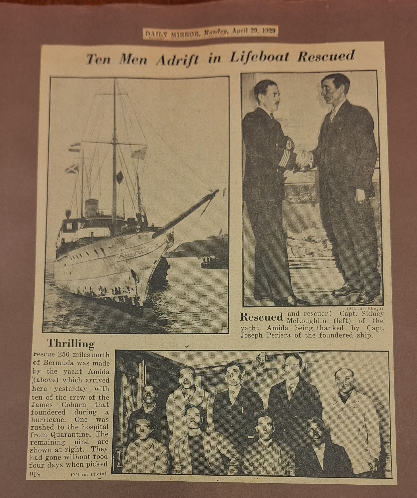
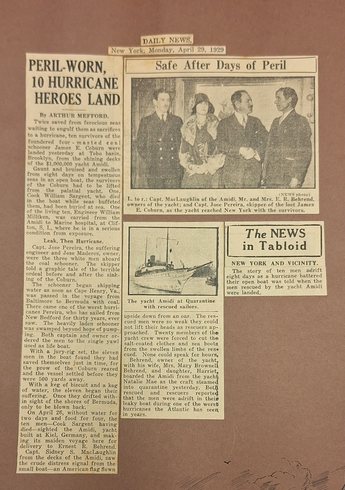
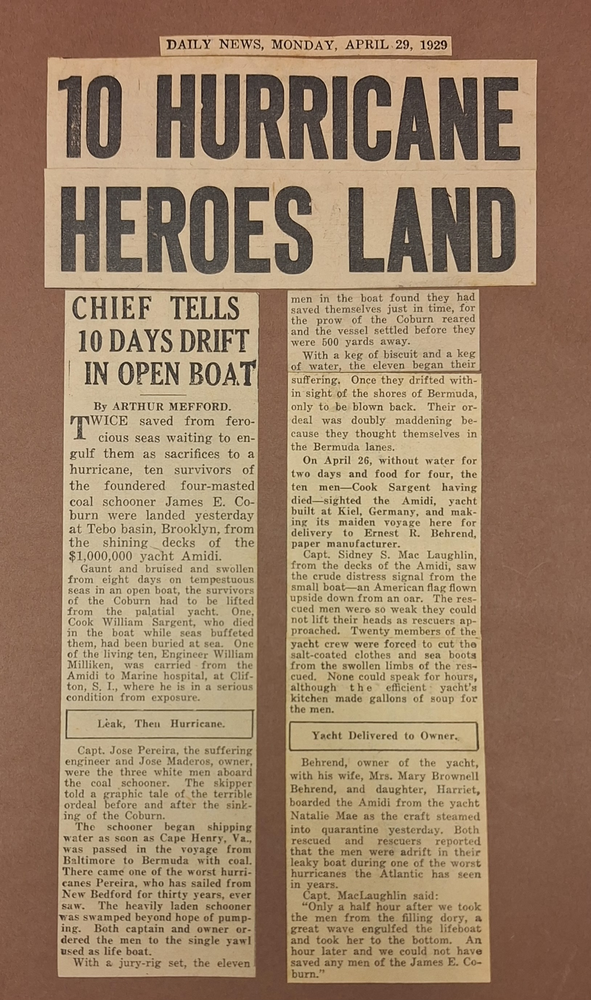
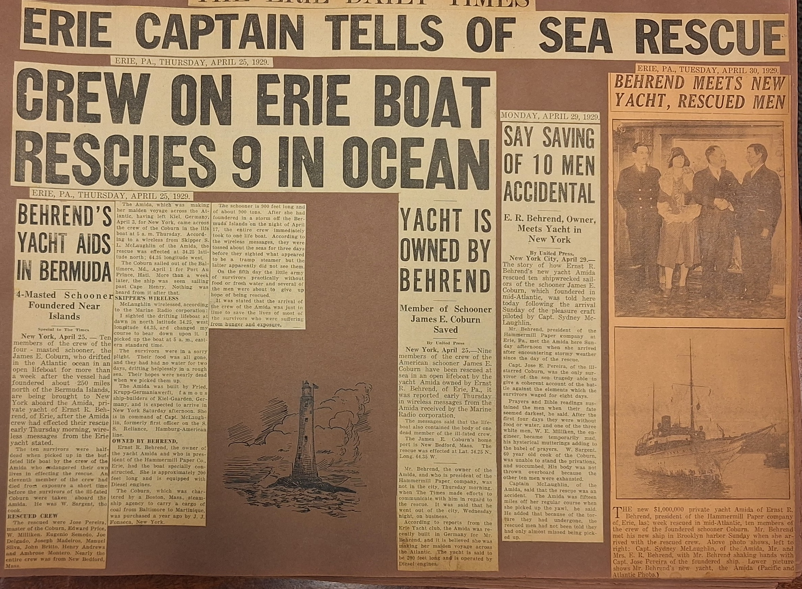
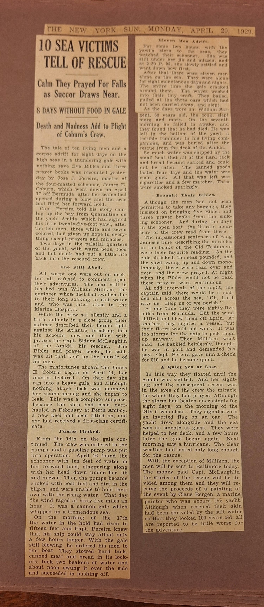

On April 17th, 1929, the James E. Coburn, owned by J. Fonceca, foundered 650 miles east of Hatteras. The crew was picked up on the southern coast of Florida. The names of the survivors: Master, J. Pereira; mate, Edward Rice; engineer, W. Milliken; mess boy, Eugenio Seuildo; seamen, Joseph Delgado, Manuel Silva, Henry Adres, R. Monterro; boatsain, John Britto; purser, Joseph Maderos. Cook, W. Sargent, died from exposure.
The Amida, which was owned by Ernest R. Behrend of Newport, R. I. and Erie, Pa., Behrend was the president and general manager of the Hammermill Paper Co. of Erie. Capt. S. L. MacLaughlin was the master of the ship.
| News Company | Date | Newspaper Photo | Newspaper Articles |
|---|---|---|---|
| Daily Mirror | April 29, 1929 |  |
DAILY MIRROR, Monday, April 29, 1929Ten Men Adrift in Lifeboat RescuedThrillingrescue 250 miles north of Bermuda was made by the yacht Amida (above) which arrived here yesterday with ten of the crew of the James Coburn that foundered during a hurricane. One was rushed to the hospital from Quaratine. The remaining nine are shown at right. They had gone without food four days when picked up. Rescuedand rescuer! Capt. Sidney McLoughlin (left above) of the yacht Amida being thanked bbt Capt. Joseph Periera of the Foundered ship. |
| Daily News | April 29, 1929 |   |
DAILY NEWS, New York, Monday, April 29, 1929The NEWS in TabloidNEW YORK AND VICINITYThe story of ten men adrift eight days as a hurricane battered their open boat was told when the men rescued by the yacht Amidi were landed. Safe After Days of perilPERIL-WORN, 10 HURRICANE HEROES LANDTwice saved from ferocious seas waiting to engulf them as sacrifices to a hurricane, ten survivors of the foundered four - masted coal schooner James E. Coburn were landed yesterday at Tebo basin, Brooklyn, from the shining decks of the $1,000,000 yacht Amidi. Gaunt and bruised and swollen from eight days on tempestuous seas in an open boat, the survivors of the Coburn had to be lifted from the palatial yacht. One Cook William Sargent, who dieo in the boat while seas buffeted them, had been buried at sea. of the living ten, Engineer William Milliken, carried from the Amidi to Marine hospital, at Clif-ton, S. I., where he is in a serious condition from exposure. Leak, The Hurricaneapt. Jose Pereira, the suffering engineer and Jose Madeors, owner, were the three white men aboard the coal schooner. The skipper told a graphic tale of the terrible ordeal before and after the sinking of the Coburn. The schooner began shipping water as soon as Cape Henry, Va., was passed in the voyage from Baltimore to Bermuda with coal. There came one of the worst hurricanes Pereira, who has sailed from New Bedford for thirty years, ever saw. The heavily laden schooner was swamped beyond hope of pumping. Both captain and owner ordered the men to the single yawl used as lifeboat. With a jury-rig set, the eleven men in the boat thought they had saved themselves just in time, for the prow of the Coburn reared and the vessel settled before they were 500 yards away. With a keg of biscuit and a keg of water, the eleven began their suffering. Once they drifted within sight of the shores of Bermuda, only to be blown back. On April 26, without water for two days and food for four, the ten men—Cook Sargent having died—sighted the Amidi, yacht built at Kiel, Germany, and making its maiden voyage here for delivery to Ernest R. Behrend. Capt. Sidney S. MacLaughlin from the decks of the Amidi, saw the crude distress signal from the small boat—an American flag flown upside down from an oar. The rescued men were so weak they could not lift their heads as rescuers approached. Twenty members of the yacht crew were forced to cut the salt-coated clothes and sea boots from the swollen limbs of the rescued. None could speak for hours. Behrend, owner of the yacht, with his wife, Mrs. Mary Brownell Behrend, and daughter, Harriett Natalie Mae as the craft steamed into quarantine yesterday. Both rescued and rescuers reported that the men were adrift in their leaky boat during one of the worst hurricanes the Atlantic has seen in years. The news segment Leak, The Hurrican was published in the photo 10 Hurrican Heroes Land. Yacht Delivered to OwnerBehrend, owner of the yacht, with his wife, |
| Daily Times | April 25,29,30 1929 |  |
THE ERIE DAILY TIMES, Thursday, April 25, 1929ERIE CAPTAIN TELLS OF SEA RESCUECREW ON ERIE BOAT RESCUES 9 IN OCEANBEHREND"S YACHT AIDS IN BERMUDA4-Mastered Schooner Foundered Near IslandsSpecial to The TimesNew York, April 25. - Ten members of the crew of the four-masted schooner, the James E. Coburn, who drifted in the Atlantic Ocean in an open lifeboat for more than a week after the vessel had foundered about 250 miles north of the Bermuda Islands, are being brought to New York aboard the Amida, private yacht of Ernst R. Behrend of Erie. After the Amida crew effected their rescue early Thursday morning, wireless messages from the Erie yacht stated that the ten survivors were half-dead when picked up in the buffeted lifeboat by the crew of the Amida, who endangered their own lives in effecting the rescue. An eleventh member of the crew had died from exposure a short time before the survivors of the ill-fated Coburn were taken aboard the Amida. He was W. Sargent, the cook. RESCUED CREWThe rescued crew members were Jose Pereira, master of the Coburn, Edward Price, W. Milliken, Eugenio Semedo, Joe Delgado, Joseph Madeiros, Manuel Silva, John Britto, Henry Andrews, and Ambrose Montero. Nearly the entire crew was from New Bedford, Massachusetts. The Amida, which was making her maiden voyage across the Atlantic after leaving Kiel, Germany, on April 3 for New York, came across the crew of the Coburn in a lifeboat at 5 a.m. Thursday. According to a wireless message from Skipper S. L. McLaughlin of the Amida, the rescue took place at 34.25 degrees north latitude and 64.35 degrees west longitude. The Coburn had sailed out of Baltimore, Maryland, on April 1 for Port-au-Prince, Haiti. More than a week later, the ship was last seen sailing past Cape Henry, and nothing was heard from it after that. SKIPPER'S WIRELESSMcLaughlin wirelessed, according to the Marine Radio Corporation: I sighted the drifting lifeboat at dawn in north latitude 34.25, west longitude 64.35, and changed my course to bear down upon it. I picked up the boat at 5 a.m., eastern standard time. The survivors were in a sorry plight. Their food was all gone, and they had had no water for two days, drifting helplessly in a rough sea. Their hopes were nearly dead when we picked them up. The Amida was built by Fried Krupp-Germaniawerft, famous shipbuilders of Kiel-Gaarden, Germany, and is expected to arrive in New York Saturday afternoon. She is in command of Capt. McLaughlin, formerly first officer on the S.S. Reliance, Hamburg-American line. OWNED BY BEHRENDErnst R. Behrend, the owner of the yacht Amida and president of the Hammermill Paper Co. of Erie, had the boat specially constructed. She is approximately 200 feet long and is equipped with Diesel engines. The Coburn, which was chartered by a Boston, Massachusetts steamship agency to carry a cargo of coal from Baltimore to Martinique, was purchased a year ago by J. J. Fonseca of New York. The schooner is 900 feet long and of about 900 tons. After she had foundered in a storm off the Bermuda Islands on the night of April 17, the entire crew immediately took to one lifeboat. According to the wireless messages, they were tossed about the seas for three days before they sighted what appeared to be a tramp steamer, but the latter apparently did not see them. On the fifth day, the little army of survivors, practically without food or fresh water, and several of the men were about to give up hope of being rescued. It was stated that the arrival of the crew of the Amida was just in time to save the lives of most of the survivors, who were suffering from hunger and exposure. YACHT IS OWNED BY BERHENDMonday, April 29, 1929Member of Schooner James E. Coburn Savedby United PressNew York, April 25. - Nine members of the crew of the American schooner James E. Coburn have been rescued at sea in an open lifeboat by the yacht Amida, owned by Ernst R. Behrend of Erie, Pennsylvania. It was reported early Thursday in wireless messages from the Amida received by the Marine Radio Corporation. The messages said that the lifeboat also contained the body of one dead member of the ill-fated crew. The James E. Coburn’s home port is New Bedford, Massachusetts. The rescue was effected at latitude 34.25 N, longitude 64.35 W.-- Mr. Behrend, the owner of the Amida and president of the Hammermill Paper Company, was not in the city Thursday morning when The Times made efforts to communicate with him regarding the rescue. It was said that he had gone out of the city Wednesday night on business. According to reports from the Erie Yacht Club, the Amida was recently built in Germany for Mr. Behrend, and it is believed she was making her maiden voyage across the Atlantic. The yacht is said to be 200 feet long and operated by Diesel engines. Monday, April 29, 1929SAY SAVING OF 10 MEN ACCIDENTALE.R. Behrend, Owner, Meets Yacht in New Yorkby United PressThe story of how Ernst R. Behrend's new yacht Amida rescued ten shipwrecked sail- ors of the schooner James E. Coburn, which foundered in mid-Atlantic, was told here today following the arrival Sunday of the pleasure craft piloted by Capt. Sydney Mc- Laughlin. Mr. Behrend, president of the Hammermill Paper company at Erie, Pa., met the Amida here Sun- day afternoon when she arrived after encountering stormy weather since the day of the rescue. Capt. Jose E. Pereira, of the Ill- starred Coburn, was the only sur- vivor of the sea tragedy able to give a coherent account of the bat- tle against the elements which the survivors waged for eight days. Prayers and Bible readings sus- tained the men when their fate seemed darkest, he said. After the first four days they were without food or water, and one of the three white men, W. E. Milliken, the en- gineer, became temporarily mad, his hysterical mutterings adding to the babel of prayers. W. Sargent. 60 year old cook of the Coburn, was unable to stand the privations, and succumbed, His body was not thrown overboard because the other ten men were exhausted. Captain McLaughlin, of the Amida, sald that the rescue was an accident. The Amida was fifteen miles off her regular course when she picked up the yawl, he said. He added that because of the tor- ture they had undergone, the rescued men had not been told they had only almost missed being pick- ed up. |
| NY Sun | April 29, 1929 |  |
THE NEW YORK SUN, Monday, April, 29, 192910 SEA VICTIMS TELL OF RESUCECalm They Prayed For Falls as Succor Draws Near.8 DAYS WITHOUT FOODDeath and Madness Add to Plight of Coburn's Crew.The tale of ten living men and corpse adrift for eight days on the high seas in the thundering gale with nothing save five Bibles and three prayer books
was recounted yesterday by One Still AbedAll except one were out on deck,but all refused to comment upon their adventures. The man still in his bed was Pumps ChockedAll except one were out on deck,but all refused to comment upon their adventures. The man still in his bed was Eleven Men AdriftFor some two hours, with the yawl's stern to the seas, they watched their schooner. She was still under hir jib and mizzen, and at 2:30 P.M. she slowly settled and went down bow first.
After that there weee eleven men alone on the sea. They were alone forbeight monotonous days and nights.
The entire time the gale cracked around them. The waves washed into the tiny craft. They bailed, pulled at the
the three oars which had not been carried away, and slept. As the days wore on Brought Their BiblesAlthough the men had not been permitted to take any baggage, they insisted on bringing books from the sinking schooner.
And during the days in the open boat the literate members of the crew read from these.
The impassioned sentences of King James's time describing. As the gale shrinked, the seas pounded, and the yawl swung
up and down monotonously,these were read over and over, ans the crew prayed. At night when the Bibles could not be read these prayers were continuous.
At odd intervals of the night, the captain said, there would be a sudden call across the sea, "Oh, Lord save us. Help us or perish."
At one time they were eighty-five miles from Quite Sea at LastIn this way they floated until thr |